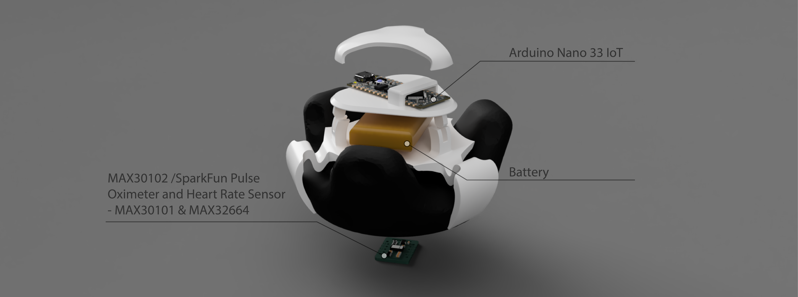
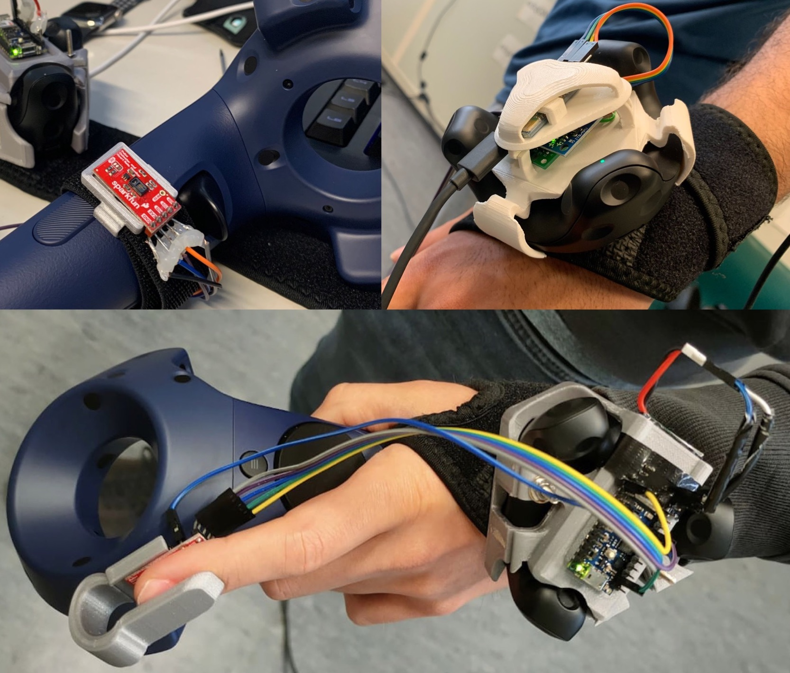
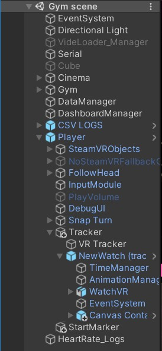

SpiderClip: Towards an Open Source System for wearable Device Simulation in Virtual Reality
Autoren: Dirk Queck, Phillip Zimmer, Nicole Burkard, Iannis Albert, Georg Volkmar, Bastian Dänekas, Rainer Malaka, Marc Herrlich
.png)
ACKNOWLEDGMENTS:
This work was partially supported by the German Research Foundation (DFG) within the priority program “Scalable Interaction
Paradigms for Pervasive Computing Environments” (SPP2199), by
the Klaus Tschira Foundation within the graduate school “Empowering Digital Media” at the University of Bremen, and by the
Research Initiative of Rhineland-Palatinate within the priority area
“AI Enhanced Cognition and Learning” and the graduate program
“Cognitive Dynamics” both at TU Kaiserslautern.
SPIDERCLIP:
Smartwatches and fitness trackers integrate different sensors from
inertial measurement units to heart rate sensors in a very compact
and affordable form factor. This makes them interesting and relevant
research tools. One potential application domain is virtual
reality, e.g., for health related applications such as exergames or
simulation approaches. However, commercial devices complicate
and limit the collection of raw and real-time data, suffer from privacy
issues and are not tailored to using them with VR tracking
systems. We address these issues with an open source design to
facilitate the construction of VR-enabled wearables for conducting
scientific experiments.


0. What you need?
This section covers all the materials to assemble the SpiderClip Prototype. You will need various hardwarecomponents,
a 3D printer, glue or screws and various software components.
| Hardware | Software |
|---|---|
| Components: - Arduino Nano 33 IOT 2x - 3.7 polymer Lithium Flat Battery - Sparkfun Pulse Oximeter and Heart Rate Sensor - MAX30101 |
Libraries: I. For Arduino: 1. Before the code runs some libraries have to be downloaded - <Adafruit_MPU650.h> - <Adafruit_Sensor.h> - <SparkFun_Bio_Sensor_Hub_Library.h> - <Wire.h> 2.Then you can download the Code from GitHub Download the code here! - Sparkfun Pulse Oximeter and Heart Rate Sensor |
|
3D Printing: Vive Tracker 1.0 and Vive Tracker 2.0: Cap Mainboard Top Drawing of Clip Vive Tracker 3.0: Top Clip 1 Clip 2 |
|
|
VR-Setup(HTC Vive) -HTC Vive hardwarecomponents -2 Basestations -HTC Vive Tracker V2 or V3 -Vive tracker hand strap |
For Unity: You'll need to download the SteamVR Asset before you can use the virtual watch: Download it here! Unity VR-Watch: You need to download the SDK, so you can use the VR-Wearable: You can use this link to do so. |
1. Wiring Hardware Components
The Arduino Nano Every Board can be powered by a Micro-USB connector to the computer, a power supply or a 3.7 Lithium battery.
The communication with the microcontroller for the heart rate sensors is done via the standardized I2C interface.
The communication with the microcontroller for the heart rate sensors is done via the standardized I2C interface.
2. SpiderClip-Sensor Source Code
In this chapter the source code for de Arduino is explained. The download link
to the source code can be found here:
First you have to download some libraries to make the source code work.
These libraries are:
These libraries are:
- <ArduinoBLE.h>
- <Arduino_LSM6DS3>
- <SparkFun_Bio_Sensor_Hub_Library.h>
- Wire.h (should be already installed)
You can also take a look at the code here:
3. 3D-Construction SpiderClip
The concept of SpiderClip is that the assembled components
can be attached to the Vive tracker and thus merge with it hardware-wise into a unified device. This case consists of three parts
and offers space for all selected hardware components. The 3
components have to be printed individually with a common 3D
printer. To attach them to each other you can either use glue or you can screw the parts together.

At this point it is important to mention that the components
should not be assembled yet. The „marriage“ of the hardware
components and the 3D printed parts will be explained in the
next chapter.
4. Fusion 3D-Printed Assebliies and Hardware Components
First, the Arduino Nano Every, the breadboard and the MPU6050 IMU must be glued to the bracket board using glue and a
hot glue gun.
Next, the „top“ element can be attached to the bracket board (See exploded view).
After that, the HC-05 module can be plugged into the recess of the „Top“ element.
Finally, the „Protective Cover“ element is glued onto the „Top“ element
Next, the „top“ element can be attached to the bracket board (See exploded view).
After that, the HC-05 module can be plugged into the recess of the „Top“ element.
Finally, the „Protective Cover“ element is glued onto the „Top“ element
5. SetUp SpiderClip and Unity Implementation
After loading the source code on the Arduino board and assembling all hardware components, the Spider Clip can be attached to
the Vive Tracker.

With this step, the preparation of the SpiderClip hardware components is finished and we can now download the virtual wearable.
The download link to the wearable can be found here:
https://github.com/D-Queck/VR_Wearable_SpiderClip
The download link to the wearable can be found here:
https://github.com/D-Queck/VR_Wearable_SpiderClip
In the next section, I‘ll show you how the Unity Asset works for the
wearable.
6. Unity MR-Wearable Asset
This section explains the virtual wearable for Unity. Figure xy shows
the wearable in a virtual training environment. The wearable is based
on the SteamVR PlugIn, which is required for functionality. However,
the wearable can be implemented in any Set Up.
An important part of the plug-in is the Serial- Com script which uses the NuGet package Sys- tem.IO
which provides communication over the serial port of the PC.
The script handles all input parameters coming from the wearable
and is the basis for the parameters displayed from the Dsahboard.
The wearable is attached to the Player Prefab of the SteamVR plugin and
localizes itself via the HTC Vive Tracker. It includes a TimeMana- ger that
displays the time and all WatchVR Ga- meObject + Dashboard.
